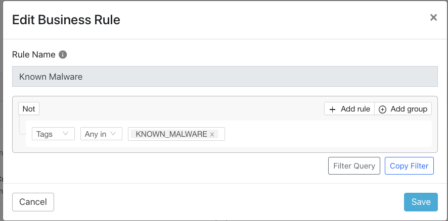
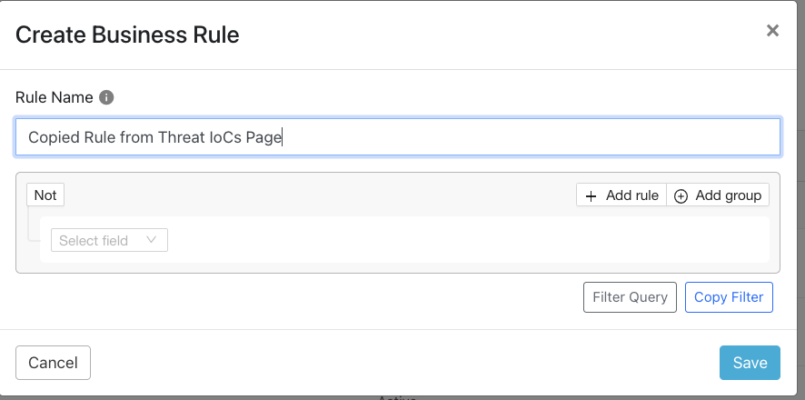
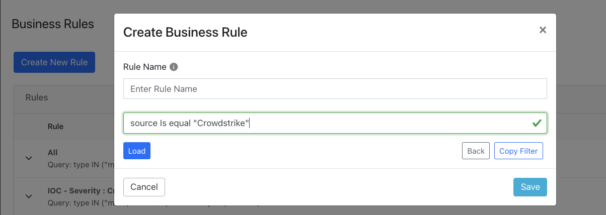
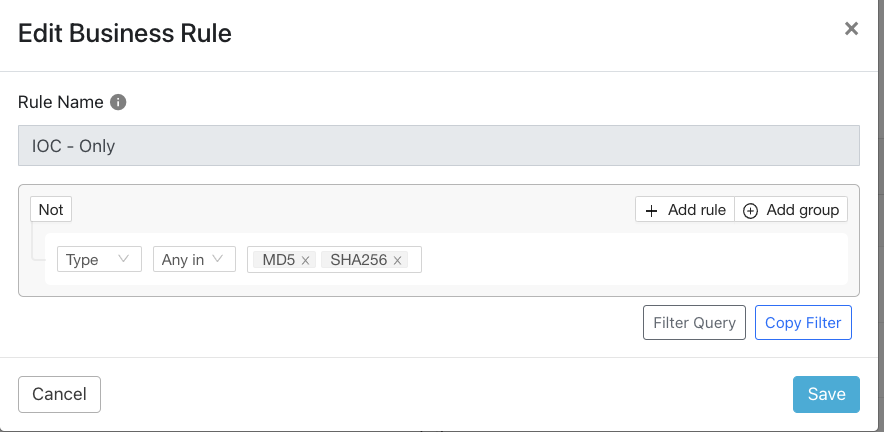
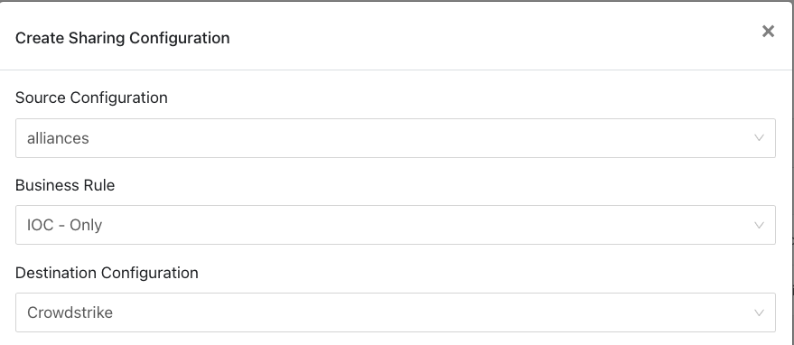
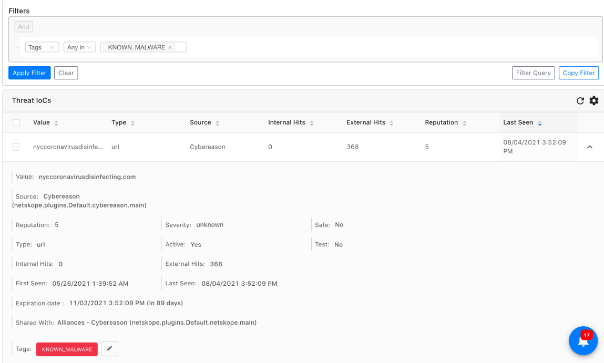
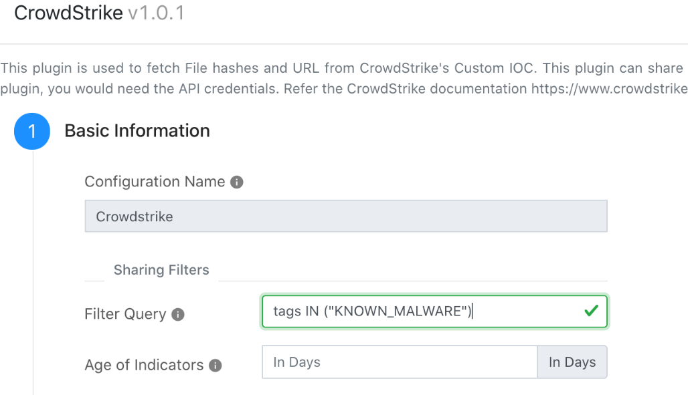

IoC Sharing Best Practices
Only need to setup a single plugin to pull data FROM Netskope. If you wish to share data from TE to multiple/different tenant files, then you may need to create multiple plugins.
Filtering is implemented on the Business Rule page, specifying which data will be eligible (or not) for sharing. In the example below any IOC that was tagged KNOWN_MALWARE would match.
|  |
Build the matching business rule using the search query in the Threat IoCs page (1), copy that filter OR click on the geared document icon (2). If you copied the filter, paste it in the Filter Query section new business rule after clicking on the Filter Query button.
|  |
|  |
If the receiving system is generating erroneous or needless alerts based on information Threat Exchange has been configured to send, you should fine tune the filter to eliminate the problematic IoC output flowing from TE. For example, the business rule should not ingest URL information from Threat Exchange, but only ingest Filehash IoC, so either add the filter query: type Not In (“url”) or filter query: type Any in “MD5” or “SHA256”.
|  |
|  |
Using a different business rule, such as the default rule “All” would have shared everything sourced by Netskope tenants to the CrowdStrike system. Now the business rule will ONLY match on and share filehash IoC.
Combining the two tools enables you to ensure that only IoC that are appropriately tagged and that match any other needed conditions are shared. Filtering can be set up ahead of time to leverage ANY, But, or Nothing But combinations, and can be continuously modified to ensure that Threat Exchange is only passing along IOC that SecOps teams have validated (and tagged) to the receiving system(s).
Tagging enables you to create sharing rules that only apply to IoC that have been manually tagged the first time. Subsequent matches will be tagged the same.
In this example, the URL IoC mycoronavirusdisinfecting.com has been tagged as KNOWN_MALWARE.
|  |
Prior to this it would NOT have been shared with a receiving plugin (CrowdStrike) configured as shown below; this sharing filter ONLY matches on and shares IOC tagged Known_Malware.
|  |
Combining the two tools enables you to ensure that only IoC that are appropriately tagged and that match any other needed conditions are shared. Filtering can be set up ahead of time to leverage ANY But or Nothing But combinations, and can be continuously modified to ensure that Threat Exchange is only passing along IOC that SecOps teams have validated (and tagged) to the receiving system(s).